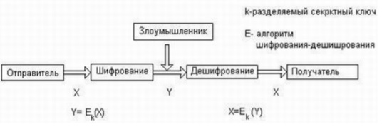

Конспекты
по Основам управления информационной безопасности
Изучение методов построения комплексной системы организационных и технических мер по защите информации
Цель работы
Изучить методы построения защищённой сетевой файловой системы.
Теоретическая часть
Файловые серверы и распределенные системы
Ключевым компонентом любой распределенной системы является файловая система, которая также является распределенной. С программной точки зрения распределенная файловая система является сетевой службой. Файловая служба включает программы-серверы и программы-клиенты, взаимодействующие с помощью определенного протокола по сети между собой.
Таким образом, файловым сервером называют не только компьютер, на котором хранятся предоставляемые в совместный доступ файлы, но и программу (или процесс, в рамках которого выполняется данная программа), которая работает на этом компьютере и обеспечивает совокупность услуг по доступу к файлам и каталогам на удаленном компьютере. Соответственно программу, работающую на клиентском компьютере и обращающуюся к файловому серверу с запросами, называют клиентом файловой системы, как компьютер, на котором она работает. Такая неоднозначность терминов «файловый сервер» и «клиент» обычно не вызывает затруднений, так как из контекста, как правило, понятно, о каком программном или аппаратном компоненте сети идет речь.
Структура сетевой файловой системы
ФС в общем случае включает следующие элементы:
- локальная файловая система;
- интерфейс локальной файловой системы;
- сервер сетевой файловой системы;
- клиент сетевой файловой системы;
- интерфейс сетевой файловой системы;
- протокол клиент-сервер сетевой файловой системы.
Шифрование
Шифрование – это краеугольный камень всех служб информационной безопасности, будь то система аутентификации или авторизации, средства создания защищенного канала или способ безопасного хранения данных.
Симметричные алгоритмы шифрования
Классическая модель симметричной криптосистемы, теоретические основы которой впервые были изложены в 1949 году в работе Клода Шеннона. В данной модели три участника: отправитель, получатель, злоумышленник. Задача отправителя заключается в том, чтобы по открытому каналу передать некоторое сообщение в защищенном виде. Для этого он на ключе k зашифровывает открытый текст X и передает шифрованный текст Y. Задача получателя заключается в том, чтобы расшифровать Y и прочитать сообщение X. Предполагается, что отправитель имеет свой источник ключа. Сгенерированный ключ заранее по надежному каналу передается получателю. Задача злоумышленника заключается в перехвате и чтении передаваемых сообщений, а также в имитации ложных сообщений.
Несимметричные алгоритмы шифрования
В середине 70-х двое ученых – Винфилд Диффи и Мартин Хеллман – описали принципы шифрования с открытыми ключами. Особенность шифрования на основе открытых ключей состоит в том, что одновременно генерируется уникальная пара ключей, таких, что текст, зашифрованный одним ключом, может быть расшифрован только с использованием второго ключа и наоборот. В модели криптосхемы с открытым ключом также три участника: отправитель, получатель, злоумышленник. Задача отправителя заключается в том, чтобы по открытому каналу связи передать некоторое сообщение в защищенном виде. Получатель генерирует на своей стороне два ключа: открытый Е и закрытый D. Закрытый ключ D (часто называемый также личным ключом) абонент должен сохранять в защищенном месте, а открытый ключ Е он может передать всем, с кем он хочет поддерживать защищенные отношения. Открытый ключ используется для шифрования текста, но расшифровать текст можно только с помощью закрытого ключа. Поэтому открытый ключ передается отправителю в незащищенном виде. Отправитель, используя открытый ключ получателя, шифрует сообщение X и передает его получателю. Получатель расшифровывает сообщение своим закрытым ключом D.
Для того чтобы в сети все п абонентов имели возможность не только принимать зашифрованные сообщения, но и сами посылать таковые, каждый абонент должен обладать своей собственной парой ключей Е и D. Всего в сети будет 2п ключей: п открытых ключей для шифрования и n секретных ключей для дешифрирования. Таким образом решается проблема масштабируемости — квадратичная зависимость количества ключей от числа абонентов в симметричных алгоритмах заменяется линейной зависимостью в несимметричных алгоритмах. Исчезает и задача секретной доставки ключа. Злоумышленнику нет смысла стремиться завладеть открытым ключом, поскольку это не дает возможности расшифровывать текст или вычислить закрытый ключ.
Аутентификация
Аутентификация (authentication) предотвращает доступ к сети нежелательных лиц и разрешает вход для легальных пользователей. Термин «аутентификация» в переводе с латинского означает «установление подлинности». Аутентификацию следует отличать от идентификации. Идентификаторы пользователей используются в системе с теми же целями, что и идентификаторы любых других объектов, файлов, процессов, структур данных, но они не связаны непосредственно с обеспечением безопасности. Идентификация заключается в сообщении пользователем системе своего идентификатора, в то время как аутентификация – это процедура доказательства пользователем того, что он есть тот, за кого себя выдает, в частности, доказательство того, что именно ему принадлежит введенный им идентификатор.
В процедуре аутентификации участвуют две стороны: одна сторона доказывает свою аутентичность, предъявляя некоторые доказательства, а другая сторона – аутентификатор – проверяет эти доказательства и принимает решение. В качестве доказательства аутентичности используются самые разнообразные приемы:
- аутентифицируемый может продемонстрировать знание некоего общего для обеих сторон секрета: слова (пароля) или факта (даты и места события, прозвища человека и т. п.);
- аутентифицируемый может продемонстрировать, что он владеетнеким уникальным предметом (физическим ключом), в качестве которого может выступать, например, электронная магнитная карта;
- аутентифицируемый может доказать свою идентичность, используя собственные биохарактеристики: рисунок радужной оболочки глаза илиотпечатки пальцев, которые предварительно были занесены в базу данных аутентификатора.
Авторизация доступа
Средства авторизации (authorization) контролируют доступ легальных пользователей к ресурсам системы, предоставляя каждому из них именно те права, которые ему были определены администратором. Кроме предоставления прав доступа пользователям к каталогам, файлам и принтерам система авторизации может контролировать возможность выполнения пользователями различных системных функций, таких как локальный доступ к серверу, установка системного времени, создание резервных копий данных, выключение сервера и т. п.
Аудит
Аудит (auditing) – фиксация в системном журнале событий, связанных с доступом к защищаемым системным ресурсам. Подсистема аудита современных ОС позволяет дифференцирование задавать перечень интересующих администратора событий с помощью удобного графического интерфейса. Средства учета и наблюдения обеспечивают возможность обнаружить и зафиксировать важные события, связанные с безопасностью, или любые попытки создать, получить доступ или удалить системные ресурсы. Аудит используется для того, чтобы засекать даже неудачные попытки «взлома» системы.
Технология защищенного канала
Как уже было сказано, задачу защиты данных можно разделить на две подзадачи: защиту данных внутри компьютера и защиту данных в процессе их передачи из одного компьютера в другой. Для обеспечения безопасности данных при их передаче по публичным сетям используются различные технологии защищенного канала.
Контрольные вопросы
Опишите структуру сетевой файловой системы
Файловая служба включает программы-серверы и программы-клиенты, взаимодействующие с помощью определенного протокола по сети между собой. Файловая служба в распределенных файловых системах (впрочем, как в централизованных) имеет две функционально различные части: собственно файловую службу и службу каталогов файловой системы.
- Первая имеет дело с операциями над отдельными файлами, такими как чтение, запись или добавление.
- Вторая – с созданием каталогов и управлением ими, добавлением и удалением файлов из каталогов и т. п.
ФС в общем случае включает следующие элементы:
- локальная файловая система;
- интерфейс локальной файловой системы;
- сервер сетевой файловой системы;
- клиент сетевой файловой системы;
- интерфейс сетевой файловой системы;
- протокол клиент-сервер сетевой файловой системы.
Дайте характеристику использования симметричных алгоритмы шифрования в сетевой ФС
В симметричных схемах шифрования (классическая криптография) секретный ключ зашифровки совпадает с секретным ключом расшифровки.
Дайте характеристику средств аутентификации в сетевой ФС
Аутентификация (authentication) предотвращает доступ к сети нежелательных лиц и разрешает вход для легальных пользователей.
В процедуре аутентификации участвуют две стороны: одна сторона доказывает свою аутентичность, предъявляя некоторые доказательства, а другая сторона – аутентификатор – проверяет эти доказательства и принимает решение. В качестве доказательства аутентичности используются самые разнообразные приемы:
- Общий секрет
- Уникальный предмет
- Биохарактеристики
Сетевые службы аутентификации строятся на основе всех этих приемов, но чаще всего для доказательства идентичности пользователя используются пароли.
Дайте характеристику средств авторизации доступа
Средства авторизации (authorization) контролируют доступ легальных пользователей к ресурсам системы, предоставляя каждому из них именно те права, которые ему были определены администратором.
Система авторизации наделяет пользователя сети правами выполнять определенные действия над определенными ресурсами. Для этого могут быть использованы различные формы предоставления правил доступа, которые часто делят на два класса:
- Избирательный доступ
- Мандатный доступ
Избирательные права доступа реализуются в операционных системах универсального назначения. В наиболее распространенном варианте такого подхода определенные операции над определенным ресурсом разрешаются или запрещаются пользователям или группам пользователей, явно указанным своими идентификаторами. Мандатный подход к определению прав доступа заключается в том, что вся информация делится на уровни в зависимости от степени секретности, а все пользователи сети также делятся на группы, образующие иерархию в соответствии с уровнем допуска к этой информации. Такой подход используется в известном делении информации на информацию для служебного пользования, «секретно», «совершенно секретно»
Дайте характеристику средств аудита
Аудит (auditing) – фиксация в системном журнале событий, связанных с доступом к защищаемым системным ресурсам. Подсистема аудита современных ОС позволяет дифференцирование задавать перечень интересующих администратора событий с помощью удобного графического интерфейса. Учет и наблюдение означает способность системы безопасности «шпионить» за выбранными объектами и их пользователями и выдавать сообщения тревоги, когда кто-нибудь пытается читать или модифицировать системный файл. Если кто-то пытается выполнить действия, определенные системой безопасности для отслеживания, то система аудита пишет сообщение в журнал регистрации, идентифицируя пользователя. Системный менеджер может создавать отчеты о безопасности, которые содержат информацию из журнала регистрации. Для «сверхбезопасных» систем предусматриваются аудио- и видеосигналы тревоги, устанавливаемые на машинах администраторов, отвечающих за безопасность.